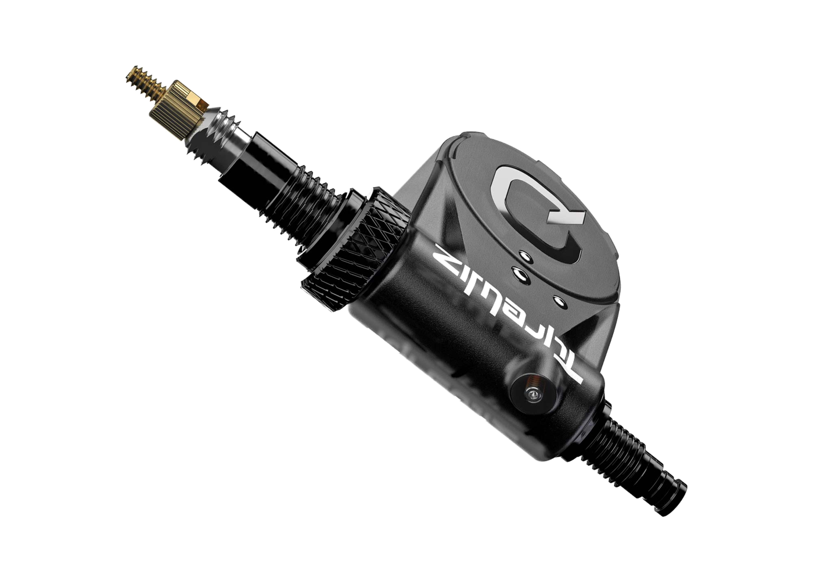
Quarq / SRAM
Quarq TyreWiz 1.0
Supported nowTyreWiz 1.0 is the original flag style valve mounted sensor for removable Presta style valve cores. It has an integrated LED and is easily swappable between wheels.
Compatible Tire Sensors
This page lists the tire pressure sensors TubeWitch supports now, along with sensors planned for future support.
Quarq / SRAM offers multiple TyreWiz sensor models, including wheel-specific versions.

Quarq / SRAM
TyreWiz 1.0 is the original flag style valve mounted sensor for removable Presta style valve cores. It has an integrated LED and is easily swappable between wheels.
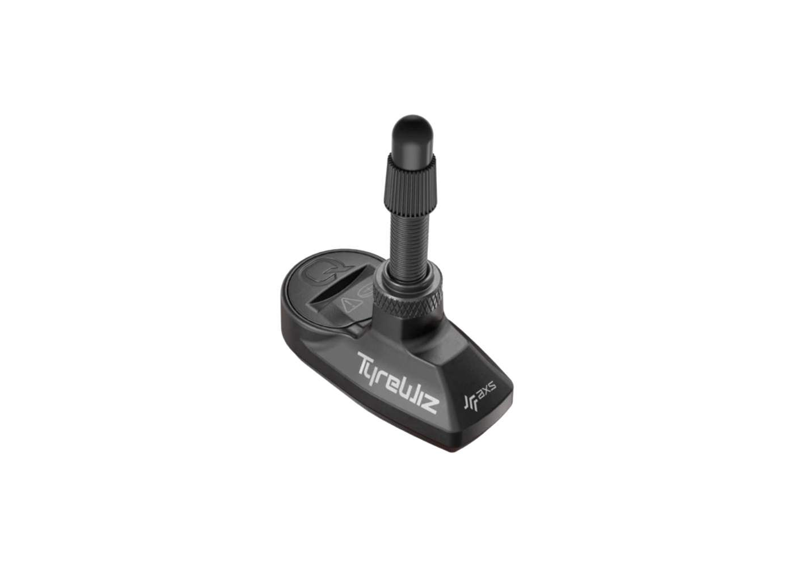
Quarq / SRAM
TyreWiz 2.0 is redesigned with a lower profile shape that mounts closer to the rim, but requires compatible valve stems matched to your rim.
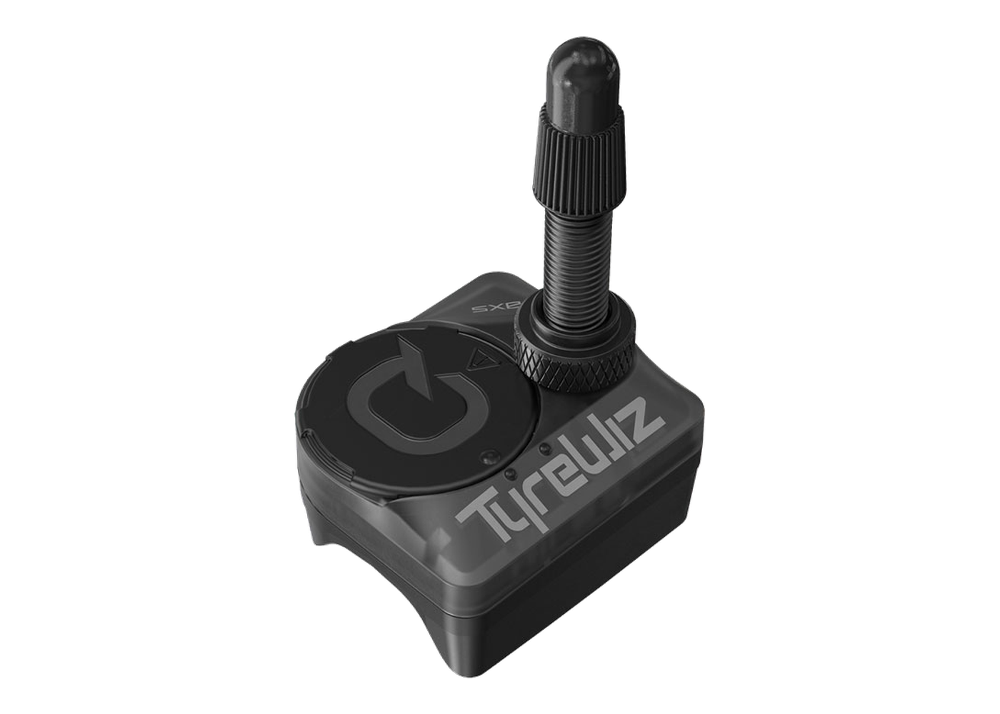
Quarq / SRAM
TyreWiz for 101 XPLR is the wheel specific pressure sensor option for Zipp's 101 XPLR gravel wheel platform.
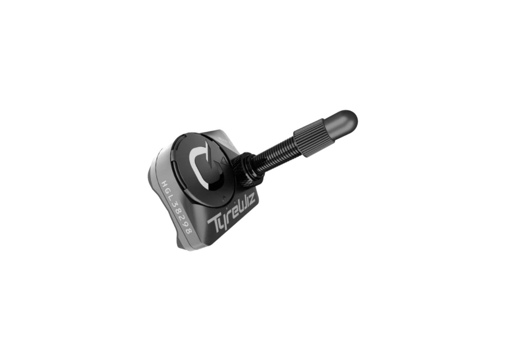
Quarq / SRAM
TyreWiz for Moto brings the core TyreWiz tire pressure monitoring features to Zipp 3ZERO MOTO wheels.
Zipp AXS-equipped wheels add real-time tire-pressure monitoring directly into selected wheelsets.
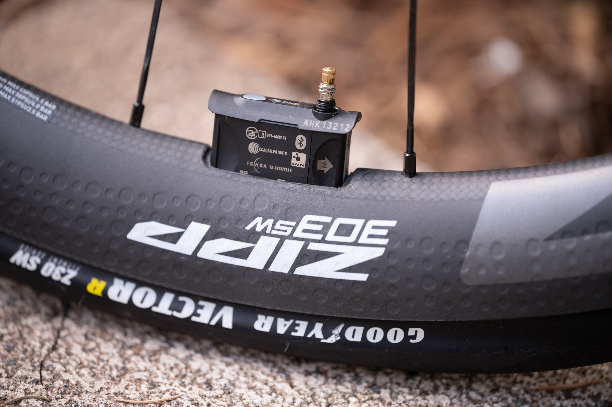
Zipp
303 SW is an all-road tubeless disc-brake wheelset with an internally integrated Zipp AXS Wheel Sensor. The 40 mm deep, wide-rim design is built for road, gravel, cobbles, and cyclocross with real-time tire-pressure monitoring built into the wheel.
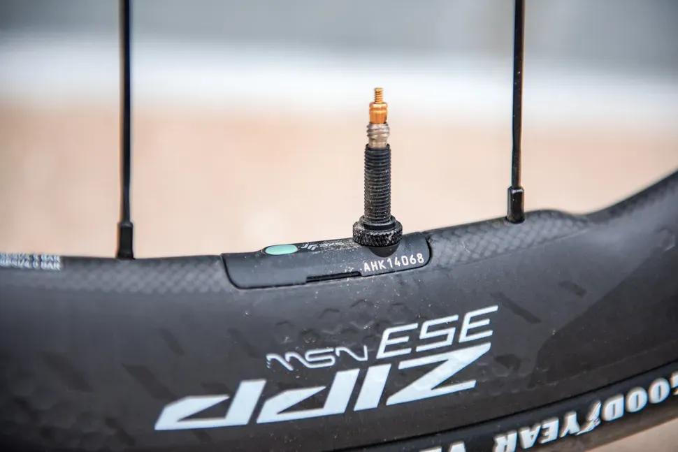
Zipp
353 NSW is Zipp's first SRAM AXS-connected wheelset and its lightest, most advanced road wheel platform. It combines the integrated Zipp AXS Wheel Sensor with a 35/40 mm Sawtooth rim profile, ZR1 SL hubs, ceramic bearings, and a design optimized for 30 mm tires.
Schwalbe's valve-mounted tire pressure sensor for tube and tubeless setups.
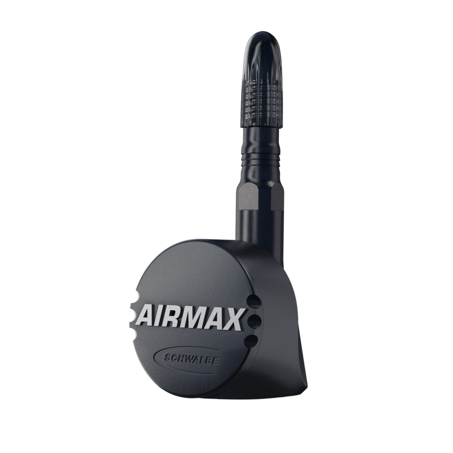
Schwalbe
Schwalbe AIRMAX with integrated LED works with Presta style valves with removable cores. It mounts over the existing valve stem, supports tube and tubeless setups, and can be easily moved between compatible wheels.
An open-source bicycle tire pressure monitoring sensor project
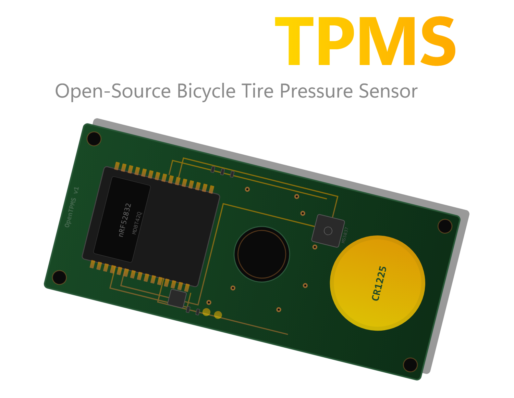
OpenTPMS
OpenTPMS is an open source bike TPMS project with planned dual ANT+ and BLE support and a replaceable battery. Hardware, firmware, enclosure, and testing are still in progress.
SKS AIRSPY tire sensors for Presta, Schrader, and tubeless TL setups.
 AIRSPY sensors MUST be running the custom firmware by bitmeal.
AIRSPY sensors MUST be running the custom firmware by bitmeal.
TubeWitch support requires the custom firmware by bitmeal. Stock AIRSPY firmware will not work with TubeWitch.
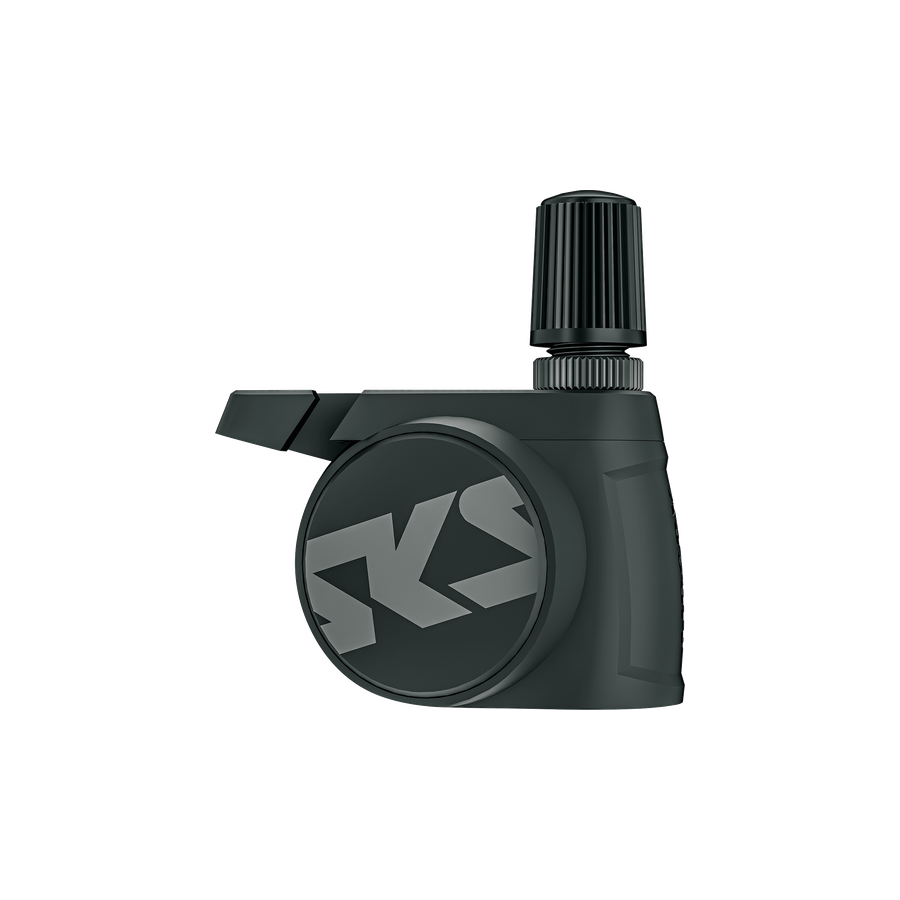
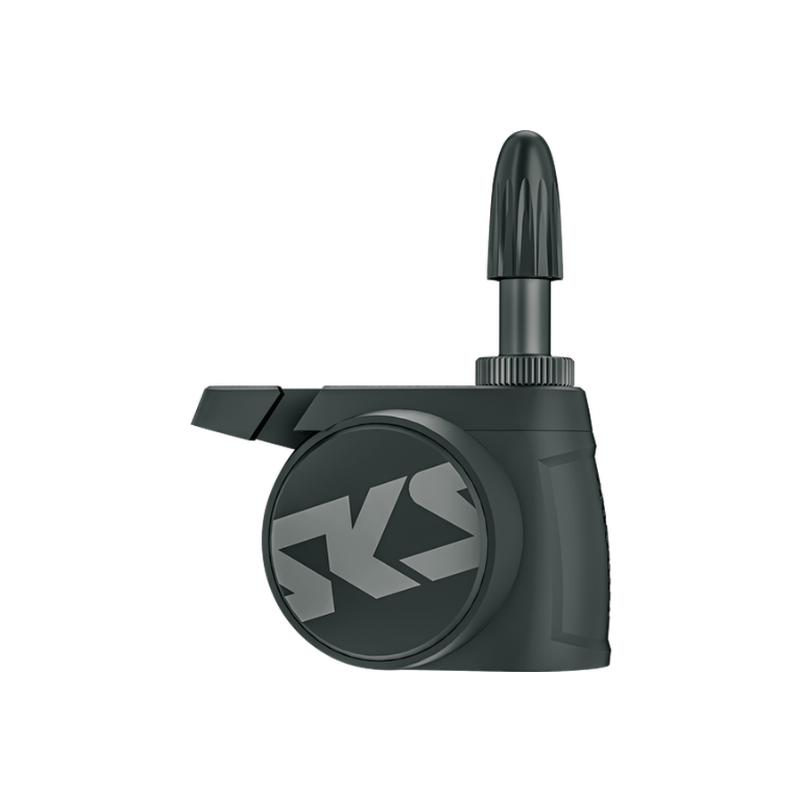
SKS
Stock AIRSPY is available in separate Presta and Schrader valve mounted versions, designed to send live tire pressure data through SKS's app ecosystem using SKS's proprietary AIRSPY protocol.
Official AIRSPY Schrader page Official AIRSPY Presta page bitmeal firmware project
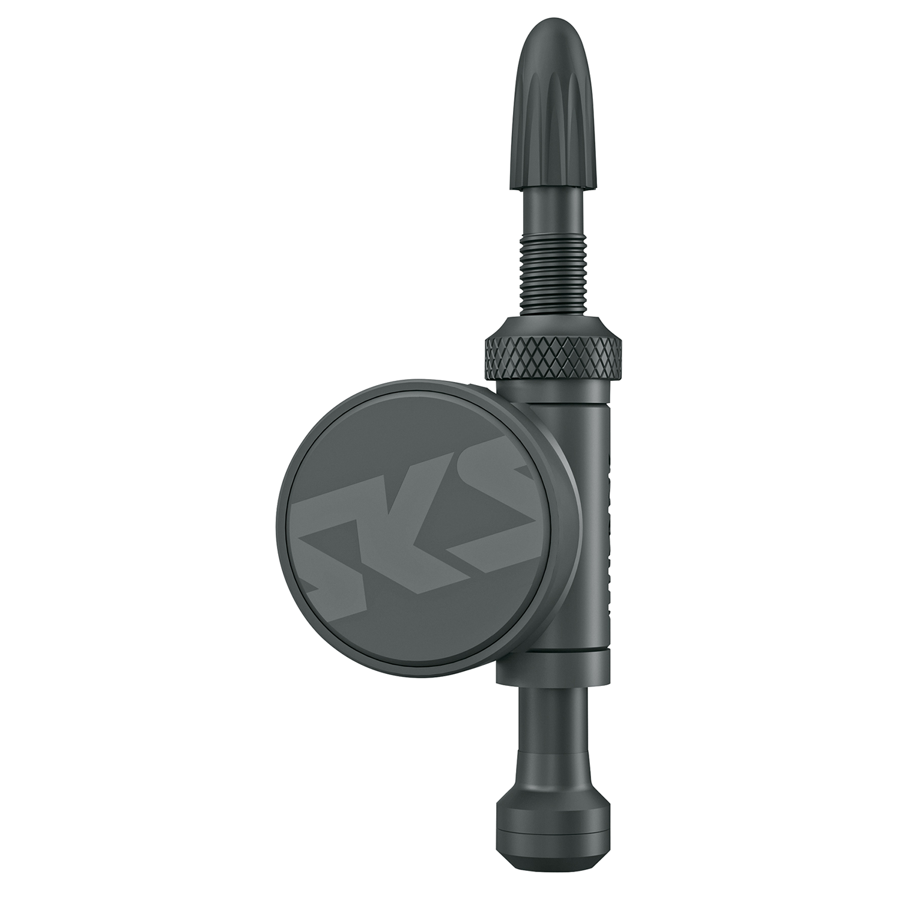
SKS
Stock AIRSPY TL is the tubeless AIRSPY variant from SKS, with the sensor integrated into the valve system and live pressure data sent through SKS's proprietary AIRSPY protocol.